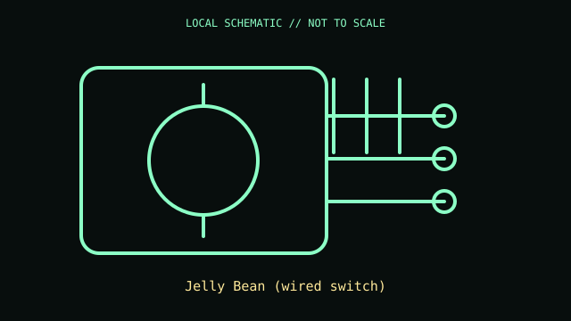

[ ADAPTIVE AND SWITCH-ACCESS CONTROLS // IDENTIFIED COMPONENT ]
AbleNet Jelly Bean Switch
Large single-action wired switch for communication aids, scanning interfaces, and adapted controllers.

MODEL IDENTIFICATION: Exact model / identifier: Jelly Bean (wired switch). Confirm label, package suffix, region, and revision against manufacturer documentation.
Model specifications
| Catalog subcategory | Adaptive and switch-access controls |
|---|---|
| Exact model / ID | Jelly Bean (wired switch) |
| Physical mechanism and primary specifications | 2.5 in / 6.4 cm activation surface; 2.5 oz / 71 g activation force; tactile and audible feedback; wired 3.5 mm mono plug; passive switch closure. Cap colors do not change protocol. |
| Host, interface, and driver caveats | Requires compatible 3.5 mm switch-input port and access software; it is not a USB keyboard and cannot connect directly to a standard computer without an interface. Distinguish from Jelly Bean Twist. |
| Revision identification | Record the complete printed SKU/PID, hardware revision, regional layout, and supplied accessories; similarly named variants may use different interfaces, drivers, or components. |
Preservation and service notes
Test switch closure before connecting assistive equipment. Keep plug clean and cable strain-relieved; mount using a compatible plate and clean top without liquid ingress.
Record unit condition, accessories, host OS, software/firmware version, and test conditions separately from manufacturer-published specifications.
Primary manufacturer documentation
- AbleNet Jelly Bean SwitchManufacturer product or support documentation; verify exact model and regional revision against the device label.
- AbleNet product and switch-access supportManufacturer product or support documentation; verify exact model and regional revision against the device label.
Support pages can change; preserve the applicable manual and its revision with the physical equipment record.